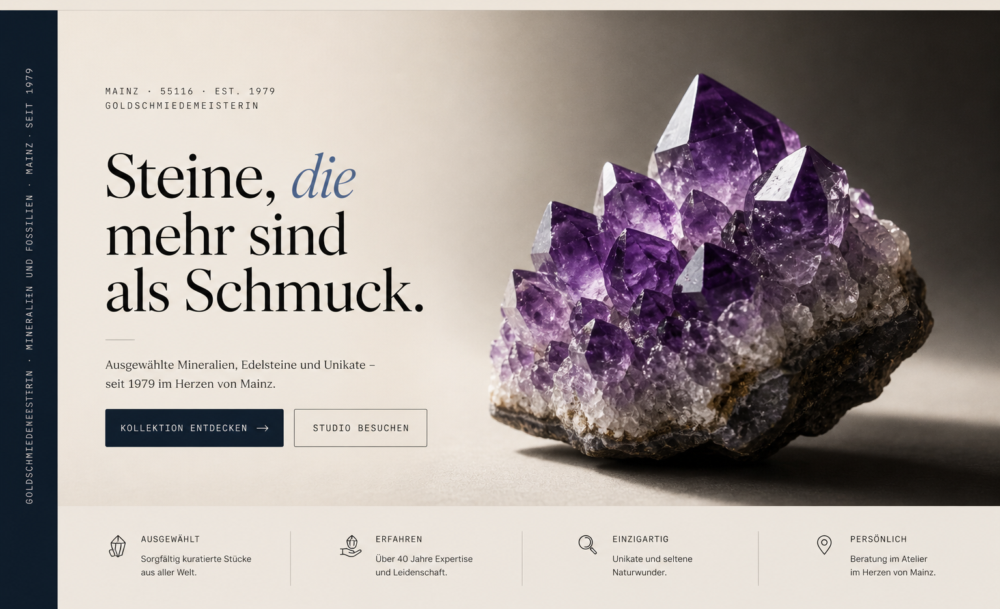
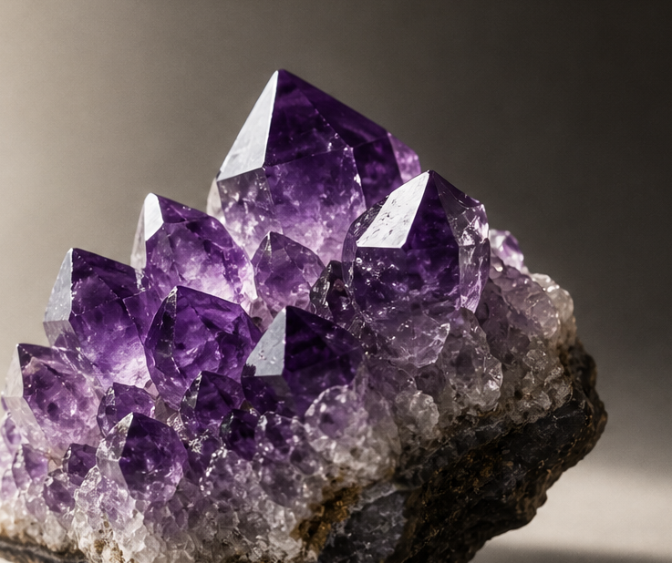
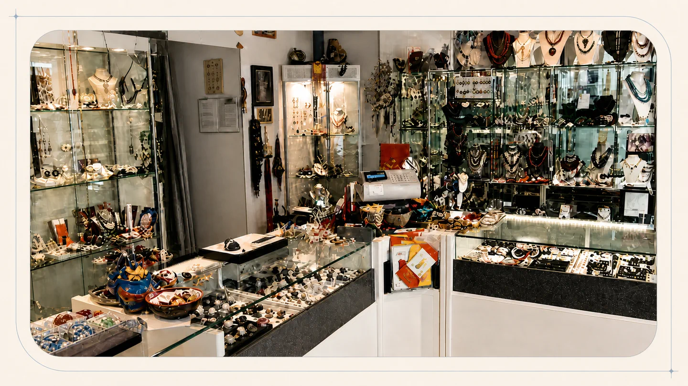

Gold- & Silberschmuck

Klassiker, Anfertigungen und ausgewählte Trauringe. Wir fassen Steine, ändern Erbstücke und arbeiten an eigenen Entwürfen — vom feinen Goldring bis zum schweren Silberanhänger.


Ausgewählte Mineralien, Edelsteine und Unikate — seit 1979 im Herzen von Mainz.
Manifest · 1979
Inge Griss hat das Studio in einer Zeit gegründet, als Mineralogie noch Wunderkammer hieß. Diese Haltung haben wir nie verloren. Bei uns gibt es keine Ware von der Stange — sondern Stücke, jedes mit Herkunft, Charakter und einem kleinen Etikett.
Was wir verkaufen, könnten wir auch selbst nie hergeben: rohe Bergkristalle aus den Alpen, Smaragde mit Geschichte, eine 380 Millionen Jahre alte Trilobitenplatte. Und ja — wir fassen das Beste davon auch in Gold.
§ II · Bergkristall
Fünf rohe Bergkristalle. Scrollen Sie weiter — und sehen Sie, wie sich aus einzelnen Stücken eine Kristallstufe verdichtet.
Die meisten Juweliere kennen Gold. Wir kennen Gold und Silber — und das Gestein, aus dem die Erde gemacht ist. Vier Sammlungen, eine Adresse.
Klassiker, Anfertigungen und ausgewählte Trauringe. Wir fassen Steine, ändern Erbstücke und arbeiten an eigenen Entwürfen — vom feinen Goldring bis zum schweren Silberanhänger.

Geschliffen, kalibriert und ehrlich beschrieben. Smaragd, Saphir, Rubin, Turmalin, Aquamarin — und die seltenen Stücke, die nicht auf jeder Liste stehen.

Roh, ungeschliffen, manchmal millionen Jahre alt. Drusen, Kristallstufen, Achate. Stücke, bei denen man die Hand auflegen möchte, bevor man entscheidet.

Was uns am meisten unterscheidet: ein Juwelier, der auch Fossilien führt. Ammoniten, Trilobiten, fossile Hölzer, einzeln katalogisiert — Wissenschaft zum Anfassen.
Ein Auszug. Was im Studio steht, wechselt — was gut ist, bleibt nie lange. Jedes Stück trägt sein Etikett. Wenn Sie etwas Bestimmtes suchen, rufen Sie an.

Quartz · SiO₂
Herkunft: Val Strem, Schweiz
Klar, mit nadelförmigem Rutil-Einschluss.

Beryl · Be₃Al₂Si₆O₁₈
Herkunft: Muzo, Kolumbien
2,4 ct · jardin sichtbar, lebendig.

Cleoniceras · ca. 110 Mio. Jahre
Herkunft: Mahajanga, Madagaskar
Polierte Schnittfläche, calcifizierte Kammern.

Eigene Anfertigung
Studio Mainz · 2025
Brillant 0,72 ct, kissenförmige Fassung.

Quartz var. amethyst
Herkunft: Artigas, Uruguay
Tieflila Spitzen, rohe Außenkruste.

Phacops rana · 380 Mio. Jahre
Herkunft: Devon, Marokko
Komplett erhalten, freipräpariert.
Sie suchen ein bestimmtes Stück? Eine Trilobitenplatte für ein Geschenk, einen Smaragd zum Selbstfassen, einen Solitärring zur Verlobung — schreiben Sie uns auf #steinstudiogriss oder kommen Sie vorbei. Lotharstrasse 8.

§ III · Atelier
Inge Griss ist Goldschmiedemeisterin und seit den späten Siebzigern in Mainz — direkt neben der Römerpassage, nicht in einer Filiale, nicht in einem Shoppingcenter, sondern in einem Studio mit Werkbank, Wissen und Sammlung.
Wer eintritt, wird nicht „bedient". Wir reden über das, was Sie bringen oder suchen — ein Erbstück das umgearbeitet werden soll, einen Stein der lange wartet, einen Geburtstag den ein Fossil begleiten soll. Beratung dauert hier so lange, wie sie dauern muss.
Drei Minuten zu Fuß von der Römerpassage. Wer Mainz kennt, findet uns ohne Karte. Wer nicht — folgen Sie der Lotharstrasse bis Nummer 8.
Stein-Studio Inge Griss GmbH
Lotharstrasse 8
55116 Mainz
Nähe Römerpassage
Termine außerhalb dieser Zeiten gerne nach Vereinbarung.